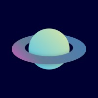

Choisissez une chaîne pour lancer le direct.
OK : statistiques détaillées en direct · Retour : fermer
OK : favoris, groupes, recherche, actualiser, paramètres, quitter
Les adresses MilkyWan sont déjà configurées.